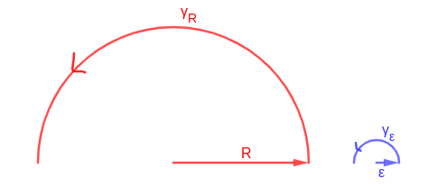
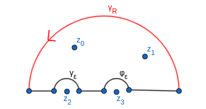

Residuos
Dada una función analítica, y dada una singularidad $z_0$, definimos el residuo de $f$ en $z_0$ como:
$$ \text{Res}(f, z_0) = a_{-1} $$
Donde $a_{-1}$ es el primer término de la parte principal de la serie de Laurent de $f$ en $z_0$
Forma práctica de calcular los residuos:
• Si $z_0$ es un polo de orden 1, entonces
$$ \text{Res}(f, z_0) = \lim_{z \rightarrow z_0} (z-z_0)f(z)$$
• Si $z_0$ es un polo de orden m, entonces
$$ \text{Res}(f, z_0) = \frac{g^{m-1}(z_0)}{(m-1)!} \text{ con } g(z) = f(z) \cdot (z-z_0)^m$$
• Si $f(z) = \frac{P(z)}{Q(z)}$, con $P(z_0) \neq 0$ y $Q(z_0) = 0$ de orden 1, entonces:
$$ \text{Res}(f, z_0) = \frac{P(z_0)}{Q'(z_0)}$$
• Teorema de los residuos: Sea $f$ analítica en $D$ salvo en un número finito de puntos. Sea $\gamma$ curva cerrada simple orientada positivamente en $D$. Entonces:
$$ \oint_{\gamma} f(z)dz = 2 \pi i \sum \text{Res}(f, z_i)$$
Donde $z_i$ son las singularidades (número finito) de $f$ que están dentro de la curva $\gamma$.
Residuo en el infinito: Si $f$ es analítica en $|z|>R$, $\text{Res}(f, \infty) = \text{Res}\left(\frac{-1}{z^2}f\left(\frac{1}{z}\right), 0\right)$
• Teorema de los residuos (versión del infinito): Sea $\gamma$ curva cerrada simple orientada positivamente tal que $f$ es analítica fuera de $\gamma$ salvo en un número finito de puntos. Entonces:
$$ \oint_{\gamma} f(z)dz = -2 \pi i \sum \text{Res}(f, z_i)$$
Donde $z_i$ son las singularidades de $f$ que están fuera de la curva $\gamma$, incluyendo el infinito. Nota: es esencial que el número de singularidades sea finito.
Aplicación de los residuos al cálculo de integrales reales
• Lema 1:
$$ \lim_{\substack{|z|\rightarrow \infty \\ Im(z) > 0}} |zf(z)| = 0 \Rightarrow \lim_{R \rightarrow \infty}\int_{\gamma_R}f(z) = 0$$
• Lema 2:
$$ \lim_{\epsilon \rightarrow 0} \int_{\gamma_{\epsilon}}f(z) = - \pi i \text{Res}(f, z_0)$$
donde $\gamma_R$ es la semicircunferencia positiva de radio $R$ y centro el origen y $\gamma_{\epsilon}$ es la semicircunferencia positiva de centro $z_0$ y radio $\epsilon$:

Sea una función real definida salvo en un número finito de puntos. El Valor Principal de su integral se puede calcular aplicando el teorema de los residuos. Ejemplo:
• Supongamos una función real con dos singularidades en el eje x ($z_2$ y $z_3$) y dos singularidades en el semiplano superior complejo ($z_0$ y $z_1$). Supongamos que el lema 1 es de aplicación. Entonces, usando el siguiente dibujo:

$$ \text{V.P.}\int_{-\infty}^{\infty}f(x)dx = 2 \pi i \text{Res}(f, z_0) +$$
$$ + 2 \pi i \text{Res}(f, z_1)) - \pi i \text{Res}(f, z_2) $$
$$ - \pi i \text{Res}(f, z_3))$$